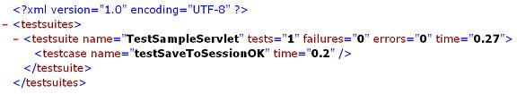
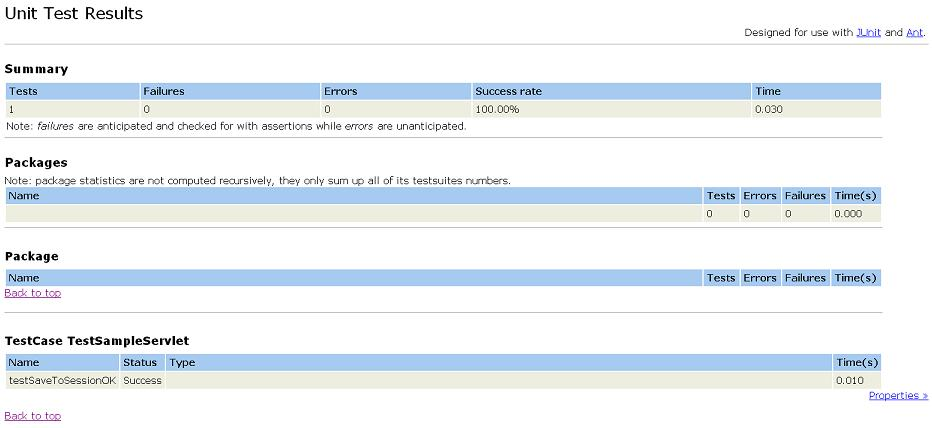

|
|
| Apache > Jakarta > Cactus > Running Tests | Docs for: v1.7.2 | v1.7 Last update: March 26 2006 |
Tomcat Quickstart forewords
This tutorial applies to Cactus 1.4 or greater and Tomcat 4.0 or
greater.
This document is a step by step tutorial that explains how to set up Cactus and run Cactus tests in Tomcat in less than 10 minutes ! (discounting download time of course :-)). There are 2 ways of packaging Cactus so that you can execute Cactus tests on your application:
In addition to this, there are several ways to trigger the execution of the Cactus tests (see the TestRunner Howto tutorial). We will describe the easiest one to set up in this tutorial, which is by using a browser.
Step 1 to step 3 are a one time install steps that you need to perform
only once to be able to run Cactus tests within Tomcat.
Step 1: Install Tomcat
Download Tomcat
4.0 or greater and unzip it in any directory. Let's call this directory
Step 2 : Copy the Cactus jars
Download the Cactus jars from the Cactus
download page. They are located in the
Copy the following jars to
This is the minium set of jars needed. If later on you wish to use the
Cactus HttpUnit integration
you'll also need to copy
httpunit.jar.
Step 3: Modify Tomcat web.xml
Edit
<servlet>
<servlet-name>ServletRedirector</servlet-name>
<servlet-class>org.apache.cactus.server.ServletTestRedirector</servlet-class>
<init-param>
<param-name>param1</param-name>
<param-value>value1 used for testing</param-value>
</init-param>
</servlet>
<servlet>
<servlet-name>ServletTestRunner</servlet-name>
<servlet-class>org.apache.cactus.server.runner.ServletTestRunner</servlet-class>
</servlet>
Then, after the last
<servlet-mapping>
<servlet-name>ServletRedirector</servlet-name>
<url-pattern>/ServletRedirector</url-pattern>
</servlet-mapping>
<servlet-mapping>
<servlet-name>ServletTestRunner</servlet-name>
<url-pattern>/ServletTestRunner</url-pattern>
</servlet-mapping>
Warning: Be careful when you modify the global
Tomcat
web.xml file. If later on you wish to use
the Cactus Ant integration and more specifically if you use the
<cactifywar> Ant task, you may run into problems.
The <cactifywar> task automatically adds the
needed Cactus redirectors (thus they'll be added twice leading to
an error.
Step 4: Creating a sample applicaton to testWe're now going to create a very very simple application to server so that we can unit test it. First, create the following directory structure:
[tomcat-root]/webapps
|_ test
|_ WEB-INF
|_ classes
Then, create the following
import javax.servlet.http.HttpServlet;
import javax.servlet.http.HttpServletRequest;
public class SampleServlet extends HttpServlet
{
public void saveToSession(HttpServletRequest request)
{
String testparam = request.getParameter("testparam");
request.getSession().setAttribute("testAttribute", testparam);
}
}
You'll notice that this isn't even a finished servlet ! However, this
shows that you can start testing your code with Cactus even before
you have finished writing it completely. Extreme Programmers should
like this :-)
We're now read to create our first Cactus test case. Create the
following
import junit.framework.Test;
import junit.framework.TestSuite;
import org.apache.cactus.ServletTestCase;
import org.apache.cactus.WebRequest;
public class TestSampleServlet extends ServletTestCase
{
public TestSampleServlet(String theName)
{
super(theName);
}
public static Test suite()
{
return new TestSuite(TestSampleServlet.class);
}
public void beginSaveToSessionOK(WebRequest webRequest)
{
webRequest.addParameter("testparam", "it works!");
}
public void testSaveToSessionOK()
{
SampleServlet servlet = new SampleServlet();
servlet.saveToSession(request);
assertEquals("it works!", session.getAttribute("testAttribute"));
}
}
Step 5: Run the test
Time to enjoy our hard work ! Start Tomcat by running
Open a browser and point it at
You should see:

Step 6: Even more fun!
Ok, that's nice ... But what if I want HTML instead of XML? Don't
worry there is a solution. Grab the following
XSLT stylesheet
(based on the stylesheet used by the
<junitreport> Ant task) and drop it in

This will work with any browser that supports client-slide XSLT
transformations (both Internet Explorer and Mozilla do, for example).
|